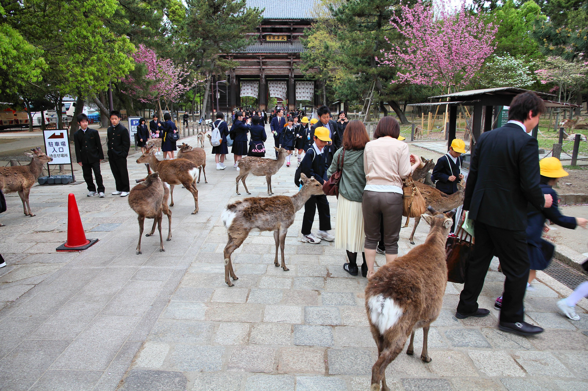
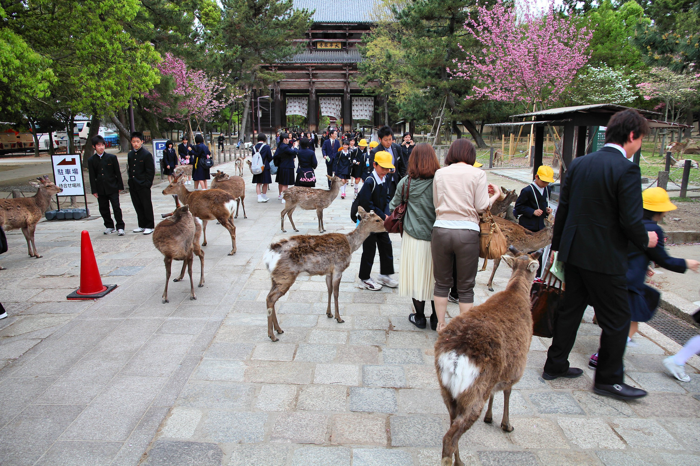

Welcome to the Japan Notepad
Embark on a journey through Japan's wonders. This is not just a notepad, but your personal scroll of knowledge, culture, and discovery. From ancient traditions to modern marvels, get ready to explore in depth.
🏯 Iconic Landmarks
- Mount Fuji – Japan's sacred symbol 🗻
- Tokyo Skytree – Towering over Tokyo 🌆
- Fushimi Inari Shrine – The 10,000 Torii gates ⛩️
- Himeji Castle – A UNESCO World Heritage Site 🏰
- Nara Park – Where friendly deer roam freely 🦌
🍱 Japanese Food to Try
- Sushi & Sashimi 🍣
- Ramen & Udon 🍜
- Takoyaki (Octopus Balls) 🐙
- Okonomiyaki (Japanese Pancake) 🥞
- Matcha Desserts 🍵
"A journey of a thousand miles begins with a single step." – Japanese Proverb
Deep Dive: Japan Facts
🇯🇵 General Facts
- Population: 125 million (approx)
- Capital: Tokyo – the world's largest metropolis
- Official Language: Japanese
- Currency: Yen (¥)
- Life Expectancy: One of the highest globally
🌸 Nature & Seasons
Japan experiences all four seasons distinctly. The cherry blossoms of spring, vibrant summer festivals, colorful autumn leaves, and snowy winters create a mesmerizing annual cycle.
🎌 Fun Trivia
- Japan has more vending machines per capita than any other country.
- Karaoke was invented in Japan! 🎤
- There's a 'crying sumo' contest where sumo wrestlers make babies cry for good health. 👶
- Square watermelons are grown for aesthetic purposes.
"Better than a thousand days of diligent study is one day with a great teacher." – Japanese Proverb
Rich Japanese Culture
🎎 Traditional Festivals
Japan celebrates hundreds of festivals (Matsuri) throughout the year, with vibrant parades, traditional music, colorful yukata, and mouth-watering street food.
🎨 Arts & Crafts
- Origami – The art of paper folding
- Ikebana – Elegant flower arranging
- Calligraphy (Shodo) – Artistic writing
- Tea Ceremony (Sado) – Ritualized preparation of matcha
👺 Mythical Creatures & Folklore
Japan is home to countless legendary creatures like Kitsune (fox spirits), Tengu (bird-like goblins), and Kappa (water spirits), all playing roles in folklore and local traditions.
"Culture is the widening of the mind and of the spirit." – Jawaharlal Nehru


 
